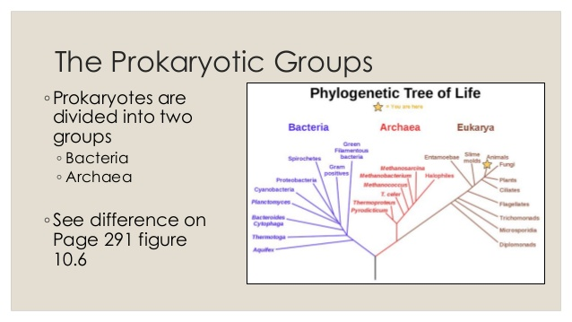
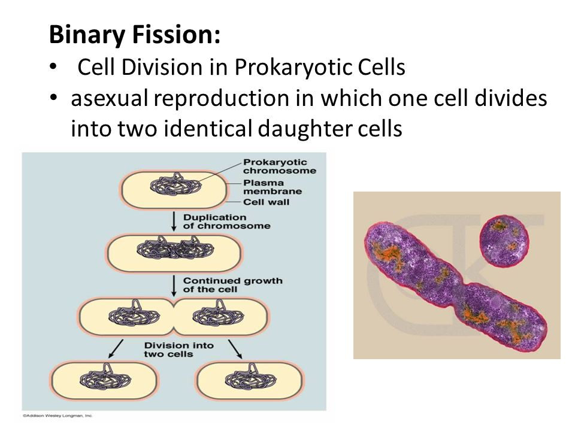
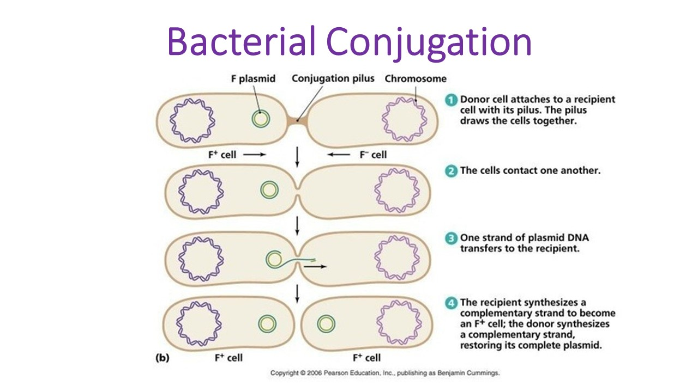
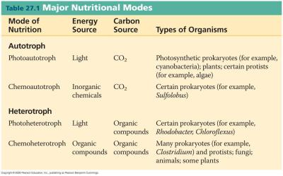
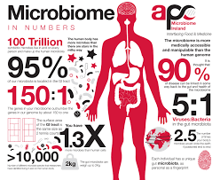
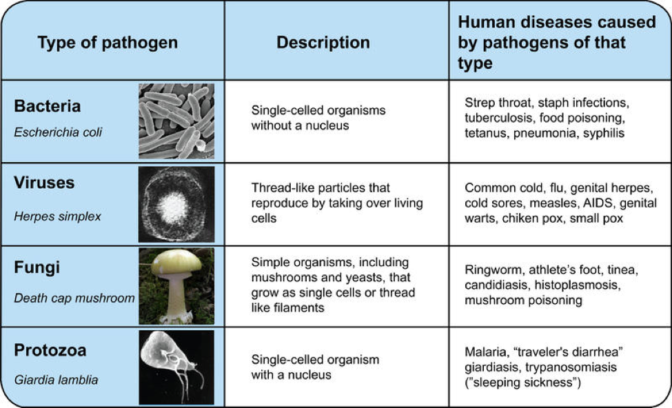
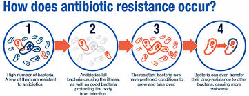
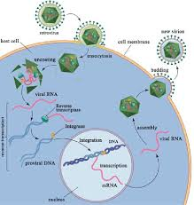

Bio-Diversity

Taxonomy Bacteria
Domains
Kingdoms
- Plantae
- Animilia
- Fungi
- Protisa
- Archaeabacteria
- eubacteria
Info about Prokayotes
Prokaytoes reproduce asexually - binary fission

Some prokayotes show social behaviors
- The communication system that enables microbes to coordinate their behavior
in repsonse to chell density is called quorum sensing.
- Upon sensing in a quorum, aggregated bacteria attach themselves to their surroundings
- Attached bacteria now divide explosively to create a tough, slime-covered aggregate
call bio film
Prokayotes can take up genetic material from their enviornment
- Some prokaryotes can take up DNA from their enviornment and incorporate it into
own DNA, a process know as transformation
- DNA can trasferred from on bacterial cell to another through bacterial conjugation
- Lateral gene transfer is the transfer of genetic material between different species
under natural conditions
- Lateral gene transfer through these and other mechanisms increases genetic diversity and
has sped up the rate of evolution in prokaryotes

Prokayotesare unrivaled in metabolic diversity

Autotrophs make food from carbon dioxide, using energy from light or air
- Some prokaryotes are chemoautotrophs:
Heterotrophs get carbon from organic matter and obtain energy from
light or orgainic matter
- Photoautrophs
- Chemoautrophs
Prokaytes play important roles in the biosphere
- Cyanobacteria accounts for 20-30% of oxygen in the biosphere
- Some prokayotes are decomposers that break down materials
- Play a role in nitrogen fixation, assist plants with the decomposition of nitrogen
Prokaryotes play important roles for humans
- Of the trillions of cells in a human, about 90% belong to microorganisms (of microbes)
that live on body surfaces and inside the intestines. -- human microbiome
- Symbiosis refers to the shared existence of two or more species; the microbes in
our microbiome are mostly beneficial

Some bacteria cause disease

Antibiotics help in the battle againse infectious diseases
- Antibiotics are molecules produced by one organism that kill or slow the growth
of another organism
- Antibiotics are naturally produced by a variety of fungi and some bacteria
- Bacteria and fungi often occupy the same ecological niche - that is, have the same
habitat and food requirements.
Inappropriate use of antibiotics can lead to selection for antibiotic resistance
- Antibiotics are ineffective against viruses

Viruses are non-living infectious agents
- A virus is a microscopic, noncellular infectious particle
- Viruses contain genetic material, either DNA or RNA
Retroviruses can insert their genetic material into a host cell's DNA
- HIV is a retrovirus, whih inserts its genetic material into host cell's DNA and could remain
dormant (latent_ for a long period of time
